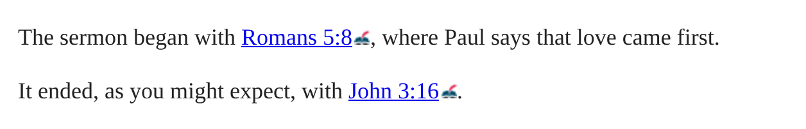

When a page has finished loading, the extension reads its text and turns each scripture reference into a link. Text that appears later, such as new comments, is linked as it arrives.

Book names in full or abbreviated, with a chapter, a verse, or a range: “Psalm 23”, “Jn 3:16”, “Romans 5:8–10”, “1 Cor 13:4-7”. References are read in the King James Version's numbering.
Each link the extension makes is followed by the small ScriptureTips logo, so you can tell it from a link the page's author wrote. The link opens in a new tab, in the reader you chose under where links go.
If a website runs the ScriptureTips website plugin itself, its links and the extension's each show their own tooltip, never two at once.